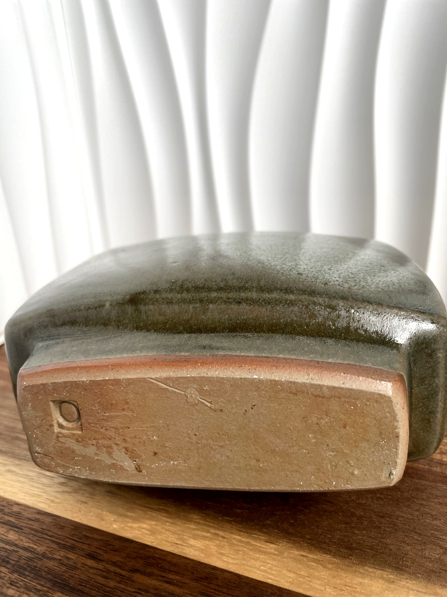
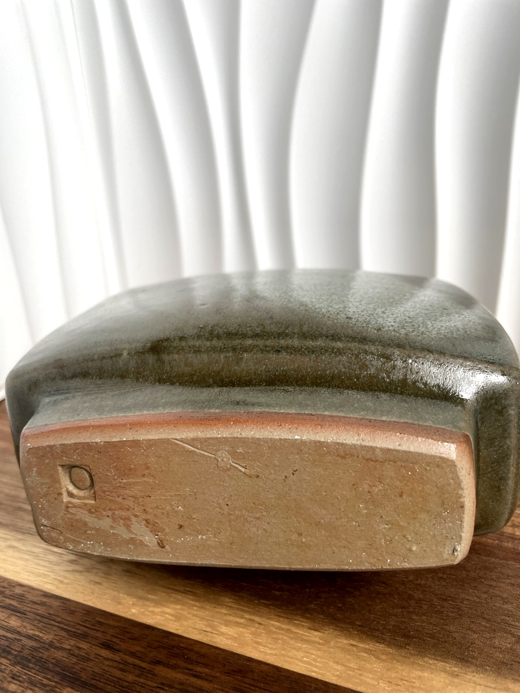
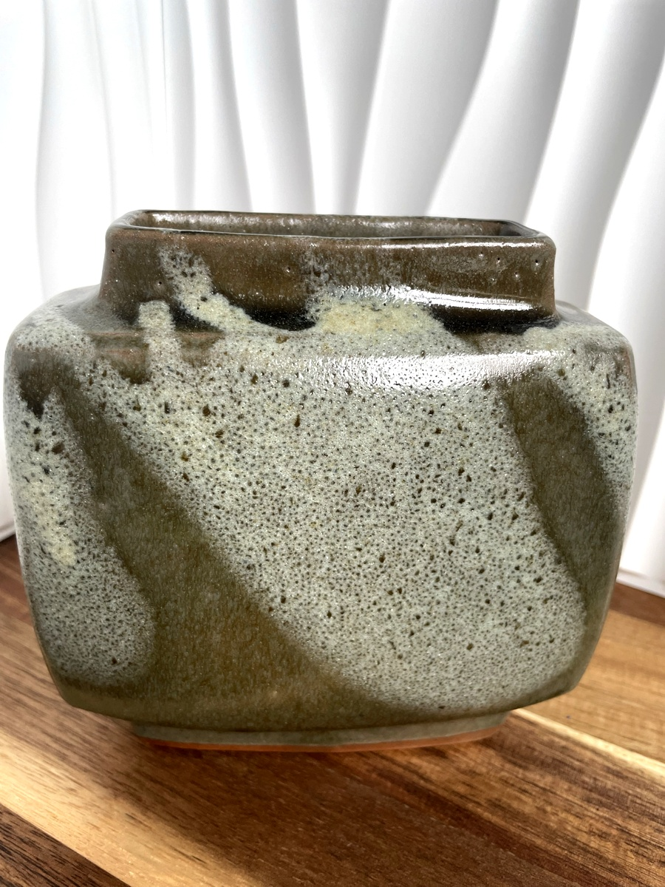
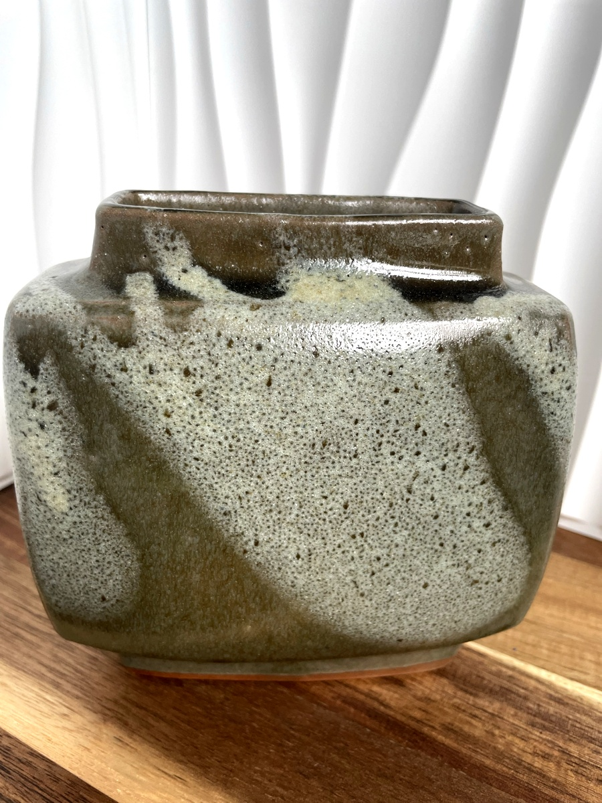
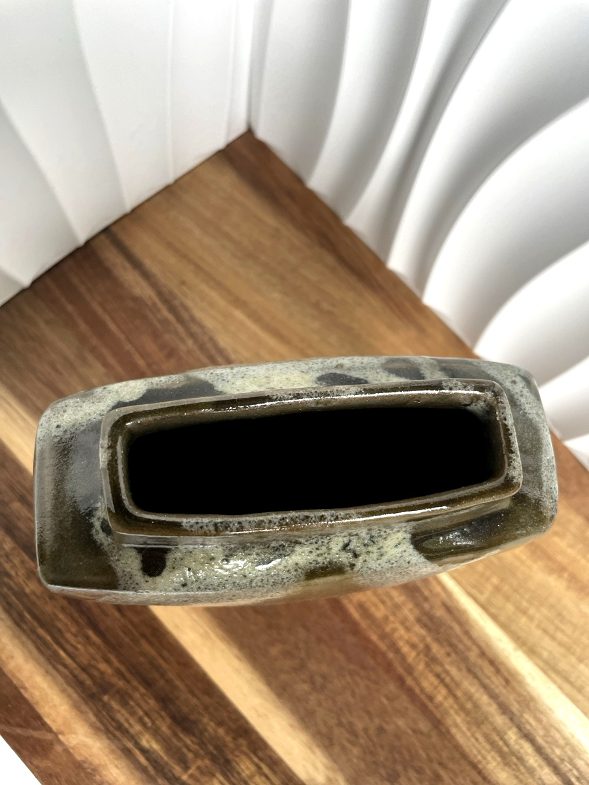
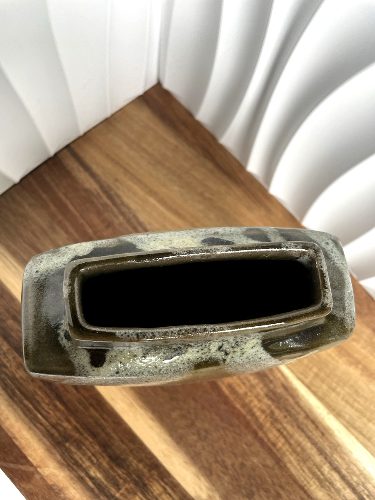

A rare and important vase by Belgian artist Pierre Culot, created for the Citroën project.
This exceptional piece highlights Culot’s mastery of ceramic forms with clean lines, balanced proportions, and a textured surface.
Its rarity and pristine preservation make it highly desirable for collectors of fine European ceramics.
Height: 25 cm Width: 14 cm Condition: Perfect, no chips
 

 

 
